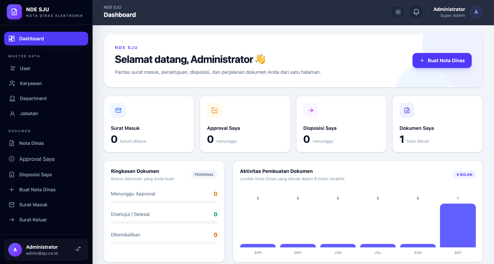

NDE SJU · DashboardNota Dinas Elektronik
THE PROBLEM
The existing system was outdated and lacked a responsive experience, making it less comfortable to use across different devices.
WHAT I BUILT
Rebuilt the NDE system with a modern, responsive interface and introduced new modules for role & permission management, document disposition, delegation, and approval workflows.
IMPACT
A more accessible and structured workflow for managing internal documents.